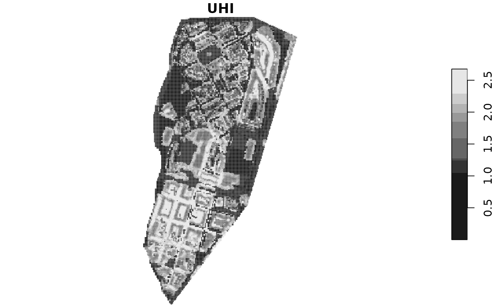

The indicator calculates the urban heat island (UHI) using the DPRA guidelines of the Dutch government.
Usage
UHI(
x,
SVF,
green_df = NULL,
Qql = 6.11,
Cair = 1007,
Pair = 1.14,
Tmax = 30.8,
Tmin = 20,
windspeed = 2.77,
return_raster = FALSE,
verbose = FALSE
)Arguments
- x
An 'sf' object with the urban model of your city and a 'Function' column with categories of urban features.
- SVF
A 'stars' object representing sky view factor. It can be computed, e.g. with SAGA's Sky View Factor algorithm and then loaded with stars::read_stars().
- green_df
A dataframe of categories that are considered as urban green with two columns. 'functions' with the names of 'Function' in 'x' to be considered as green; a 'pGreen' column with the percentage of green of that function. If NULL, categories and values of 'city_functions' dataset are considered.
- Qql
A numerical value representing the average solar radiation in W/m2/hour.
- Cair
A numerical value representing the air heat capacity in J.
- Pair
A numerical value representing the air density in kg/m3.
- Tmax
Averaged maximum temperature in ºC.
- Tmin
Averaged minimum temperature in ºC.
- windspeed
Averaged wind speed in m/s.
- return_raster
If TRUE, the raster of UHI values is returned. Otherwise, a summary of raster values is returned.
- verbose
If TRUE, returns a vector with UHI value in each cell.
Value
A 'stars' object with values of UHI. Or a numerical vector or summary statistic for UHI values. See params for more information on how to select each one.
Details
DEFAULT values are the values for 'city_example' dataset in August (averaged values from 2011-2020)
Examples
# Get a summary of the UHI
UHI(city_example, SVF)
#> Min. 1st Qu. Median Mean 3rd Qu. Max.
#> 0.000 1.247 1.596 1.494 2.060 2.675
# Get a 'stars' object representing UHI
uhi <- UHI(city_example, SVF, return_raster = TRUE)
plot(uhi)
